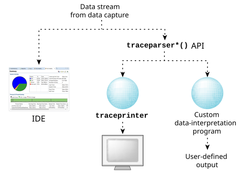

Once the data has been captured, you may process it, either in real time or offline.

The best tool (by far) for interpreting the copious amounts of trace data is the QNX Momentics IDE.
It provides a sophisticated and versatile user interface that lets you filter and examine the data.
For more information, see the
Analyzing System Behavior
chapter of the IDE User's Guide.
We also provide a traceprinter utility that simply prints a plain-text version of the trace data, sending its output to stdout or to a file.
You can also build your own custom interpreter, using the traceparser library or C Library functions to read and parse event data from the kernel trace file.